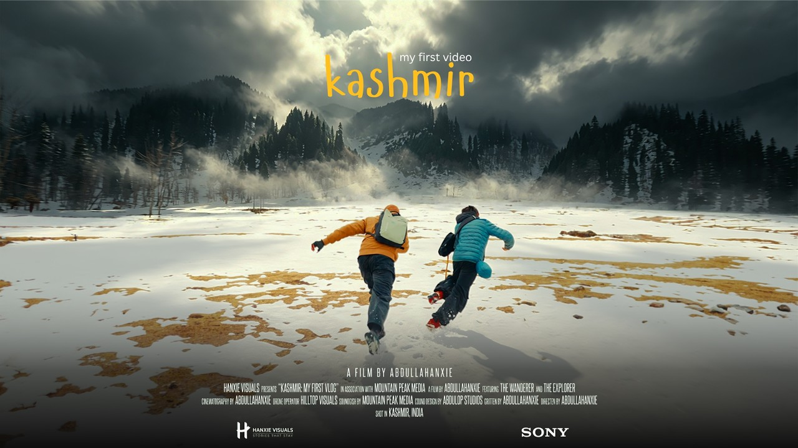
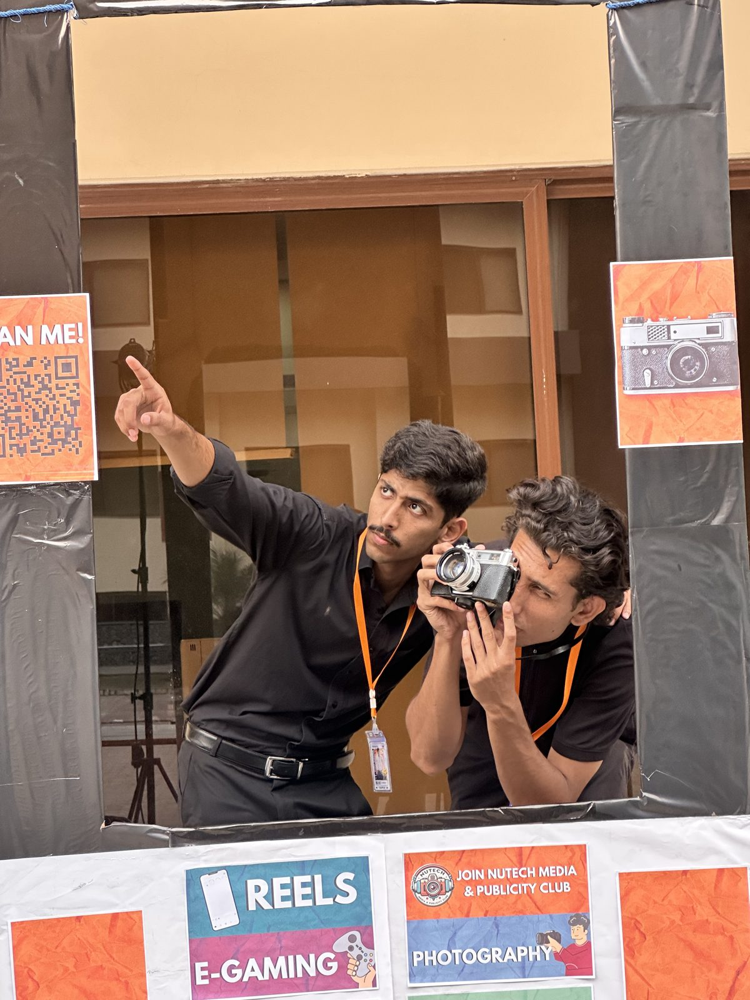
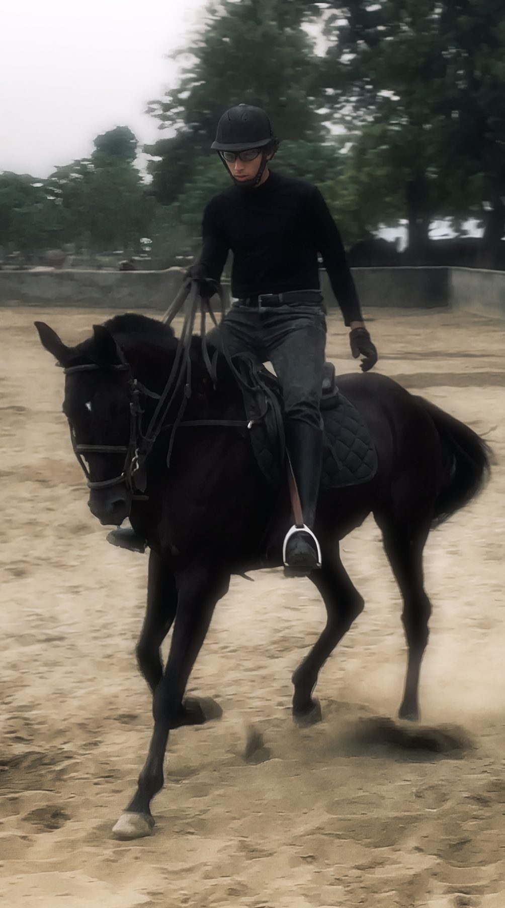
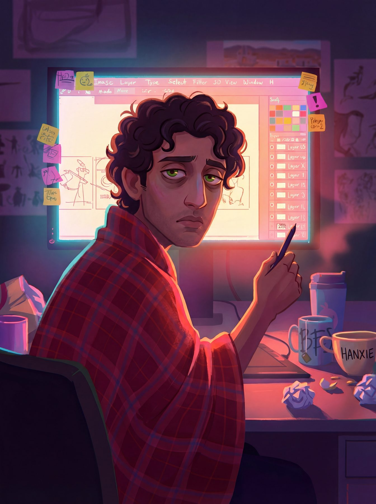
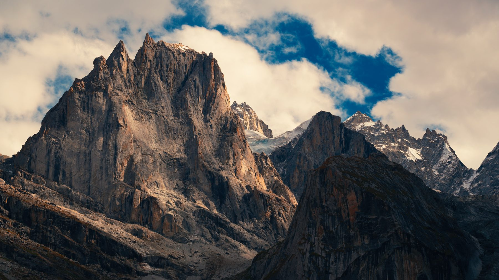

Abdullah
Hussain
Electrical engineerAI engineerFilmmakerAthlete
I build AI that turns ideas into 3D and CAD, I make films, and I spend the rest of my time on horseback or in the mountains.
I'm an electrical engineering graduate of NUTECH and was President of the NUTECH Media & Publicity Club. Today I'm an AI engineer and researcher at Rare Sense Inc and a co-author of the Nova3D paper. I also edit documentaries for YouTube channels and brands around the world.
- Based inRawalpindi, Pakistan
- WorkAI engineer & researcher, Rare Sense Inc
- ResearchNova3D, arXiv 2607.22738
- EducationElectrical engineering, NUTECH
- LeadershipPresident, NUTECH Media & Publicity Club
- OutdoorsHorse riding, trekking, running, football, calisthenics
48 Hours in Arang Kel
Two days in a Kashmir valley, away from a 9 to 5. Shot, edited and scored by me.

Three sides of the work
Each has its own page, so you can go straight to what you came for.
Highlights
A few things I'm proud of.
Nova3D: Code-Native Generation of Programmable 3D Assets
Research paper, 2026Read 02Image & text to editable jewelry CAD, with Nimra Noor
FormaNova CAD StudioVisit 03AI automation for J., Sitara and Kollective Moda
Fashion automationMore 04Humanoid robots harvesting in a Nova3D farm
Robotics filmWatch 05President, NUTECH Media & Publicity Club
LeadershipSee 0648 Hours in Arang Kel
Travel filmWatch



Quick answers
Who is abdullahanxie?
abdullahanxie is Abdullah Hussain, an electrical engineering graduate from Rawalpindi, Pakistan. He is an AI engineer and researcher at Rare Sense Inc, co-author of the Nova3D paper on code-native 3D generation, and a filmmaker, documentary video editor, sound designer and athlete.
What has he built in AI and engineering?
At Rare Sense Inc he works on Nova3D (text-to-3D and image-to-3D generation of editable, part-aware 3D assets) and FormaNova (AI jewelry photoshoots and image/text-to-CAD). With Nimra Noor he built a pipeline that turns a photo or text description into editable native Rhino CAD. He has built garment automation pipelines for J., Sitara and Kollective Moda, and he designs and simulates robots, including a 39-joint humanoid.
Does he make videos?
Yes. He makes his own films, like 48 Hours in Arang Kel, and edits documentaries for YouTube channels and brands. The client video portfolio is at abdullahanxie.com/video.
How can I contact him?
Email abdullahanxie@gmail.com, or message @abdullahanxie on Instagram.